TString内存结构
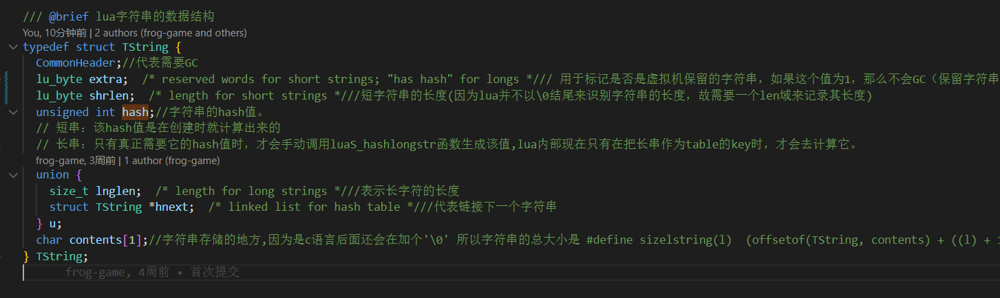
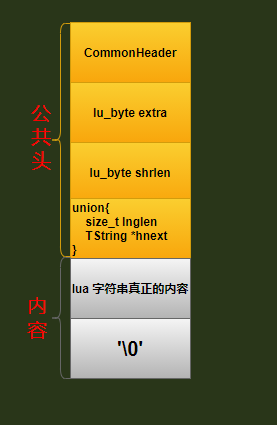
TString 的内存结构分为公共头和内容,所以其实我们的字符串真正存储的地方是 contents 里面的，因为是C语言，所以其实还会在后面添一个'\0'
求大小
从TString的内存结构我们可以看出真正变化大小的因素是contents 里面的内容,所以我们可以这么求
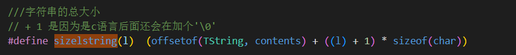
offsetof(TString, contents)相对于TString开始到contents的字节偏移量,其实也就是公共头的字节大小(l)内容大小+ 1是因为屁股后面要添加一个'\0'
类型
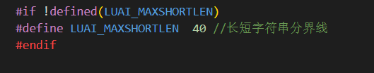
从上图的宏定义来说,lua5.4通过40个字节的分界线将string分为了两种
LUA_VSHRSTR 短字符串
- 小于等于
40字节的 hash值是在创建时就计算出来的
LUA_VLNGSTR 长字符串
- 大于
40字节的就是长字符串 - 真正需要它的
hash值时，才会手动调用luaS_hashlongstr函数生成该值,lua内部现在只有在把长串作为table的key时，才会去计算它
缓存
为了提高查找命中率,lua作者还使用hashMap这种方式来提高命中率
下图中N是数组行，M是数组列
i的下标值通过unsigned int i = point2uint(str) % STRCACHE_N求得
j的最大值固定就是下面的宏函数 STRCACHE_M 2

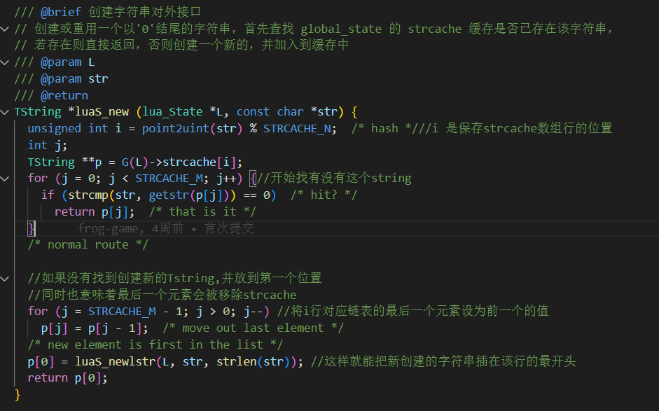
创建
短字符串创建
短字符串的hash桶结构数据都会存储在这个地方
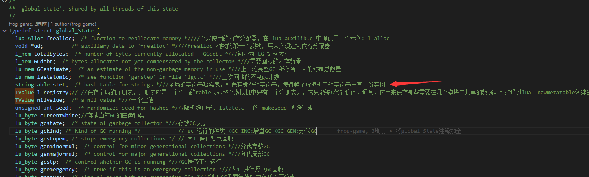
让我们进入stringtable结构可以发现如下情况
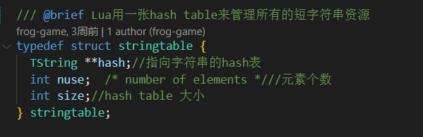
TString **hash:指向一个hash的数组，hash数组里面存着一堆hash*一维指针指向一个hash桶链表，当通过
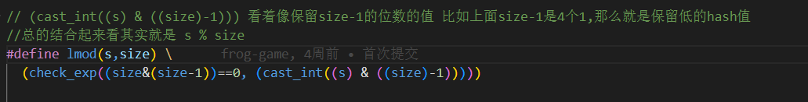
有冲突的时候,如果在hash桶链表中没找到短字符串数据,那么就通过
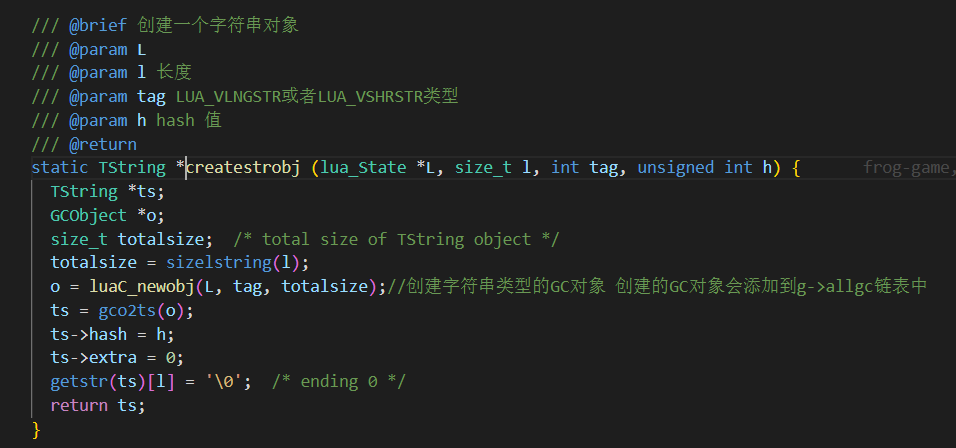
创建一个短字符串插入到hash桶的后面
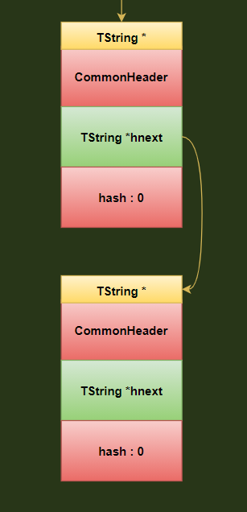
总体图示方式
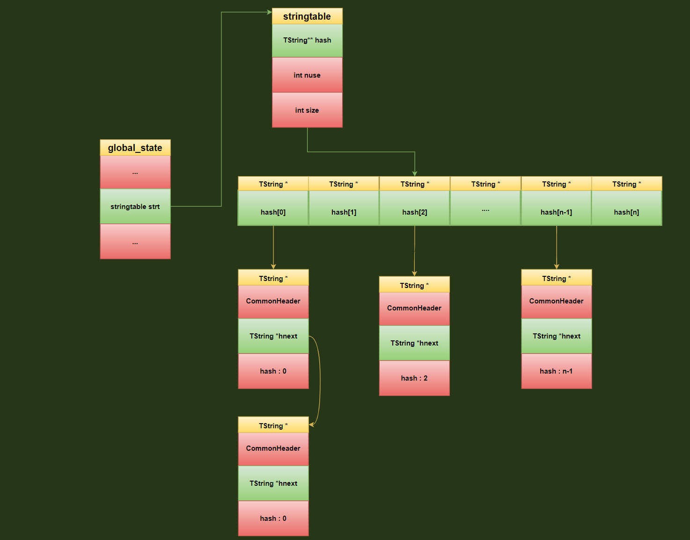
通过这样的方式短字符串就能高效重复利用,而且相同的短字符串在内存中也只有一份,在查找,删除,比较的时候短字符串的时候只需要调用下面的宏比较指针地址相同不相同就行了
长字符串创建
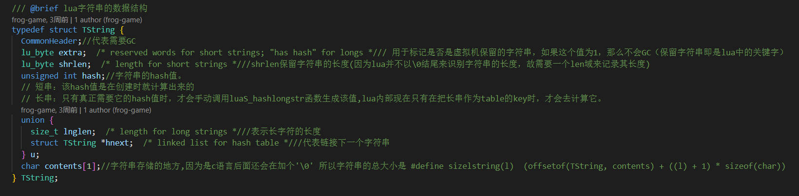
上面是TString的数据结构,也是长字符串在内存中的存储结构
通过分析下面的luaS_createlngstrobj和createstrobj函数
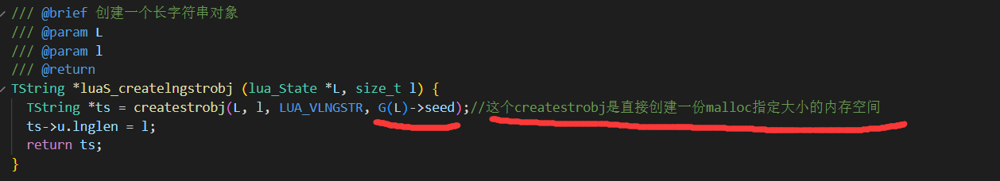
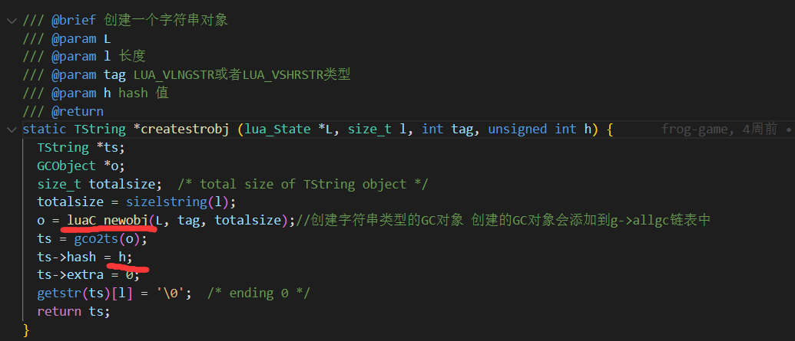
通过上面两张图上红线的分析
- 我们可以得出结论在每一次创建长字符串的时候,并不会想短字符串一样有所谓的
hash桶链表,来处理重复的使用的问题,也就是说如果是两个相同的长字符串,那么内存中就会有两份内存存在,这块地方需要注意. - 长字符串的
hash值也不是在创建的时候就生成了,只是随机的给了一个seed种子值,具体在哪里创建的可以看下面的章节
创建流程图
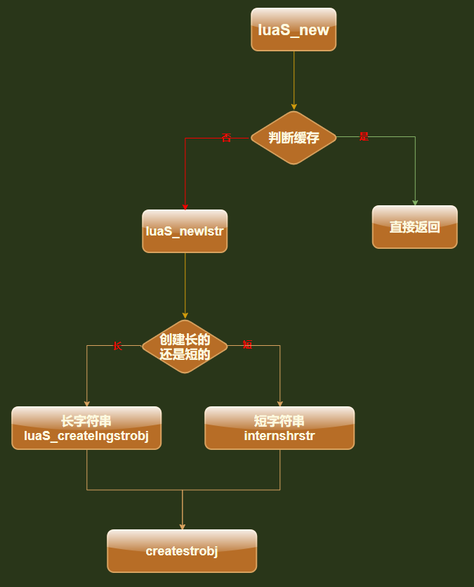
hash值
短字符hash值得计算
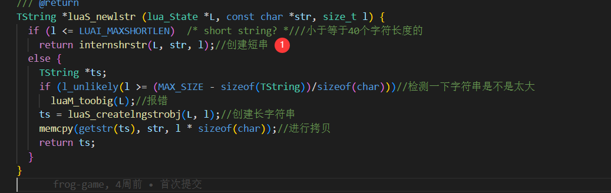
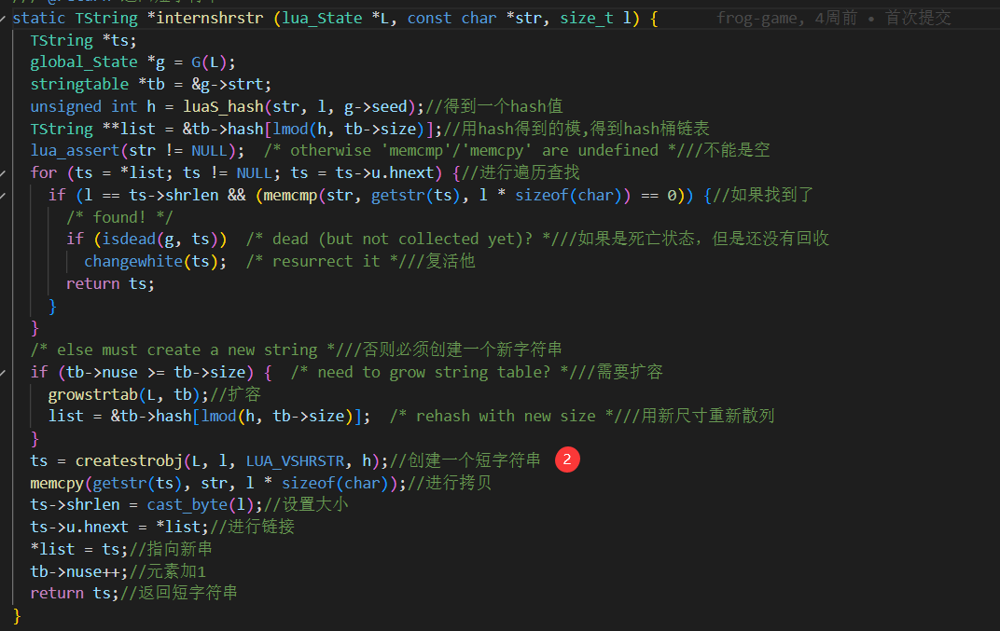
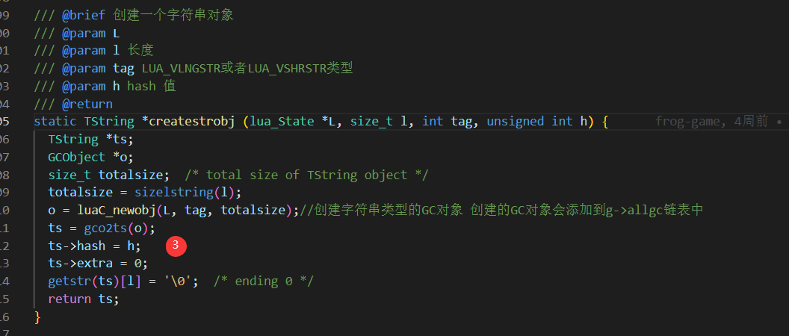
从这3部流程我们可以看到luaS_newlstr->internshrstr->createstrobj中间并没有阻拦,就在创建的时候就把hash值给创建出来了
短字符串hash表的扩容和缩小
创建时候的扩容
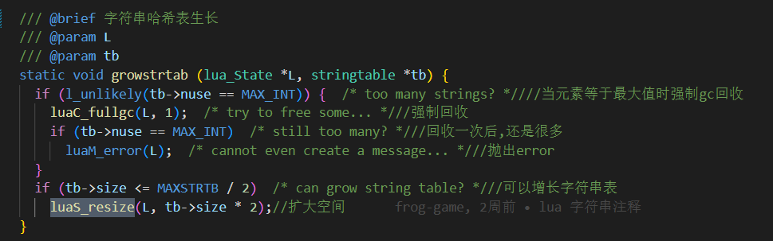
从这里可以看出如果可以hash扩容,那么就原来2的倍数增长
分代gc时候的收缩
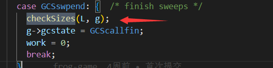
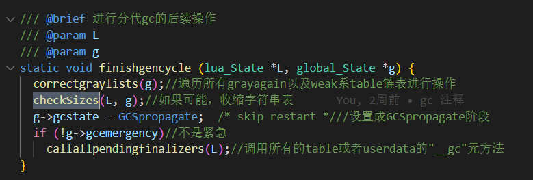
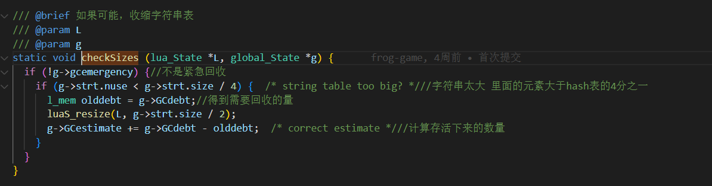
短字符串的重新计算哈希
当短字符串hash表在进行收缩和扩容的时候会重新计算哈希
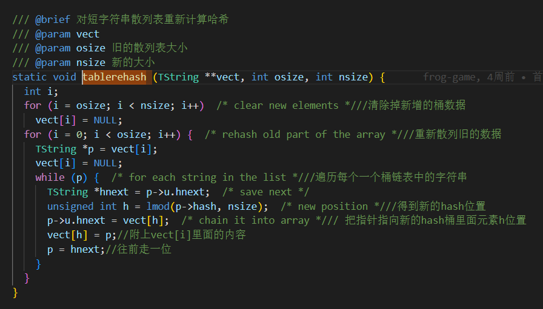
长字符串hash处理
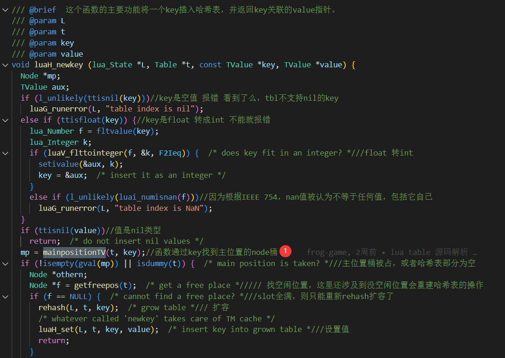
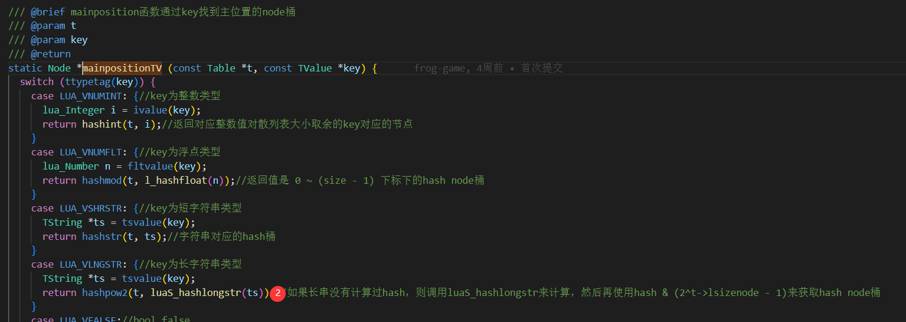
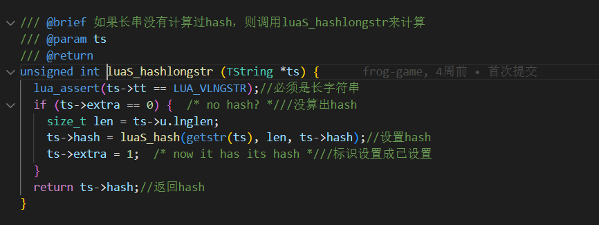
从上面代码1->2的步骤可以看出长字符串的hash值是在lua内部现在只有在把长串作为table的key时，才会去计算它
比较
短字符串的比较
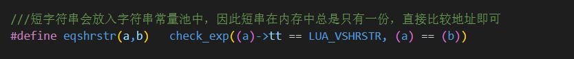
短字符串会放入字符串常量池中，因此短串在内存中总是只有一份，直接比较地址即可
长字符串的比较
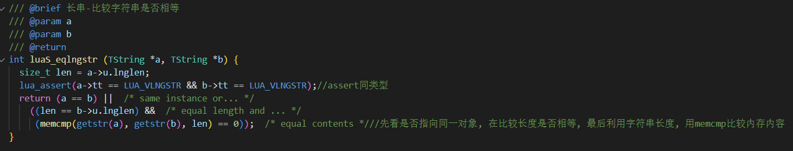
可以看到比较步骤如下
- 先比较是不是同类型
- 是不是指向同一个对象(指针地址相等的话,那么就说明指向了同一个地址)
- 如果还不行,就在比较长度是否相等，如果长度相等,那么就利用字符串长度, 用
memcmp比较内存内容是否相等
TString->extra作用
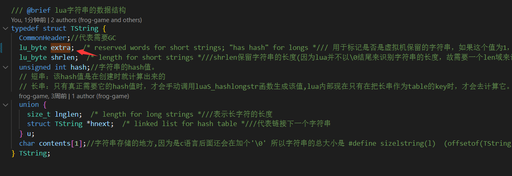
长字符串extra作用
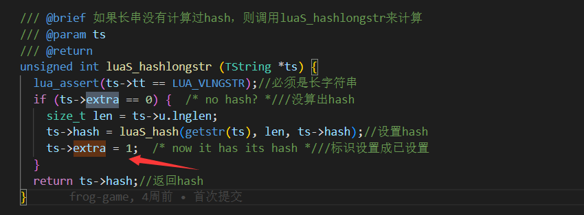
从上图中我们看到长字符串在设置hash值得时候会把这个字段设置成1
短字符串extra作用
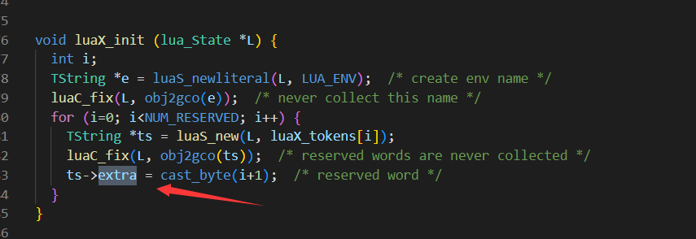
可以看到这个llex.c文件中luaX_init()函数中在创建保留字的时候会吧这个字段设置成1,其实也从侧面来说保留字不可能会大于40个字节
更详细的注释请去我的GitHub地址
以下是我几乎每行都加了注释的GitHub地址
-
lstring.h注释地址 -
lstring.c注释地址